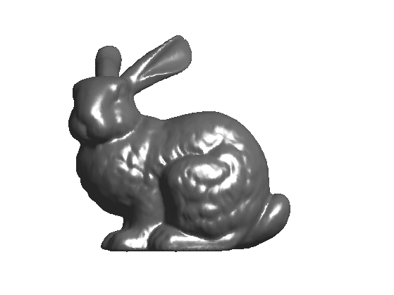
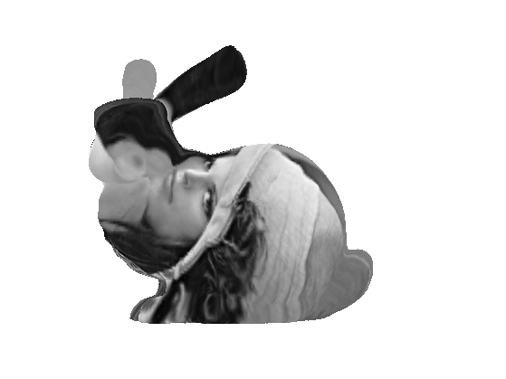
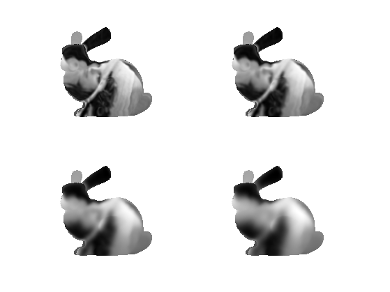
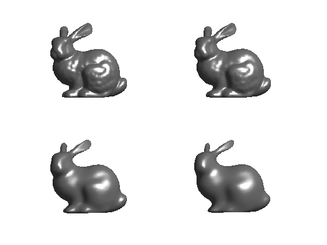
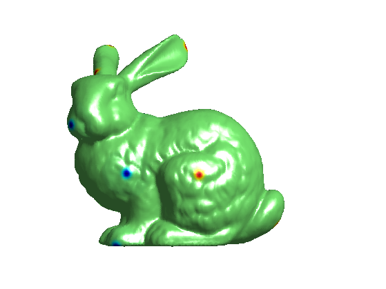
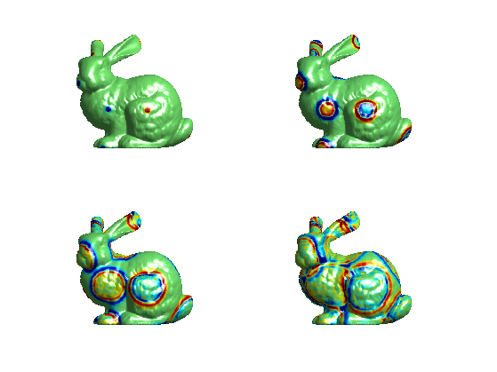

PDEs on Meshes
This tour explores the numerical computation of PDE on meshes. The spacial derivatives are replaced by discrete Laplacian operators on meshes. The time derivatives are computed with explicit time stepping.
Contents
Installing toolboxes and setting up the path.
You need to download the following files: signal toolbox, general toolbox and graph toolbox.
You need to unzip these toolboxes in your working directory, so that you have toolbox_signal, toolbox_general and toolbox_graph in your directory.
For Scilab user: you must replace the Matlab comment '%' by its Scilab counterpart '//'.
Recommandation: You should create a text file named for instance numericaltour.sce (in Scilab) or numericaltour.m (in Matlab) to write all the Scilab/Matlab command you want to execute. Then, simply run exec('numericaltour.sce'); (in Scilab) or numericaltour; (in Matlab) to run the commands.
Execute this line only if you are using Matlab.
getd = @(p)path(p,path); % scilab users must *not* execute this
Then you can add the toolboxes to the path.
getd('toolbox_signal/'); getd('toolbox_general/'); getd('toolbox_graph/');
Spacial Differential Operator
We first define differential operator using sparse matrices.
Load a mesh of \(n\) vertices.
name = 'bunny'; clear options; options.name = name; [X0,F] = read_mesh(name); n = size(X0,2); options.name = name;
Display it.
clf; plot_mesh(X0,F,options);
Exercice 1: (check the solution) Compute the cotangent Laplacian \(W\) of the mesh \[ W_{i,j} = \text{cot}(\al_{i,j}) + \text{cot}(\be_{i,j}) \] where \(\al_{i,j}\) and \(\be_{i,j}\) are the two angles oposite the the edge \((i,j)\).
exo1;
Compute the symmetric Laplacian matrix \(L=D-W\) where \(D = \text{diag}_i( \sum_j W_{i,j} )\)
d = full( sum(W,1) ); D = spdiags(d(:), 0, n,n); L = D - W;
Compute normalized operators \(\tilde W = D^{-1}W\) and \(\tilde L = D^{-1}L\).
iD = spdiags(d(:).^(-1), 0, n,n); tW = iD * W; tL = iD * L;
The Heat Equation on a Function
The heat equation is the prototype of parabolic PDE. It produces a smoothing of the initial data that increases with time.
This PDE computes a function \(f(x,t)\) of space and time that solves \[ \pd{f}{t} = -\tilde L f \qandq f(\cdot,t=0) = f_0. \]
Load a texture image.
M = load_image('lena',256);
Compute spherical coordinates \((\th,\phi)\).
v = X0 - repmat(mean(X0,2), [1 n]); theta = acos(v(1,:)./sqrt(sum(v.^2)))/pi; phi = (atan2(v(2,:),v(3,:))/pi+1)/2;
Interpolate the texture on the mesh to obtain \(f_0\).
x = linspace(0,1,size(M,1)); f0 = interp2(x,x,M',theta,phi)';
Display the initial condition \(f_0\) as a function on the mesh.
options.face_vertex_color = f0(:);
clf;
plot_mesh(X0,F, options);
lighting none;
 The PDE is discretized as \[ f^{(\ell+1)} = f^{(\ell)} - \tau \tilde L f^{(\ell)}. \] Here \(f^{(\ell)}\) is intended to approximate \(f(\cdot,t)\) at time \(t=\ell\tau\).
Final time.
Tmax = 50;
The time step \(\tau\) should be smaller than 1 to ensure stability of the scheme.
tau = .4;
Number of iterations of the method.
niter = ceil(Tmax/tau);
Initial solution at time t=0.
f = f0;
One step of discretization.
f = f - tau*tL*f;
Exercice 2: (check the solution) Compute the linear heat diffusion.
exo2;
The Heat Equation on a Surface
It is possible to apply the heat flow to each coordinate of the vertices \(X\).
Initial solution at time t=0.
X = X0;
We use an explicit discretization in time of the PDE. Here is one iteration. Note that since the matrix X stores the coordinates as row vectors, the application of \(\tilde L\) is obtained by multiplication on the right by tL'.
X = X - tau*X*tL';
Exercice 3: (check the solution) Compute the linear heat diffusion by iterating this gradient descent.
exo3;
The Wave Equation
The wave equation is the prototype of hyperbolic PDE. It produces a propagation of the initial data according to some speed. \[ \pdd{f}{t} = -L f \qandq \pd{f}{t}(\cdot,t=0)=g_0 \qandq f(\cdot,t=0)=f_0. \]
Compute initial conditions \(f_0\): little Gaussian bumps as far as possible one from each other.
n = size(X0,2); % width of the Gaussian sigma = .002; % numer of points npoints = 16; % initial condition f0 = zeros(n,1); % previous distances D = zeros(n,1) + 1e10; for i=1:npoints % select a point farthest away [tmp,p] = max(D); % compute the distance beetween the point and the other vertices d = sum( (X0 - X0(:,p)*ones(1,n)).^2 ); f0 = f0 + (-1)^mod(i,2) *exp( -d(:)/(2*sigma.^2) ); D = min(D,d(:)); end
Display it.
options.face_vertex_color = f0; clf; plot_mesh(X0,F, options); colormap(jet(256));
Set up parameters for the wave equation.
Tmax = 80; tau = .5; niter = round(Tmax/tau);
We use explicite time stepping to evaluate the derivatives, which defines \[ f^{(\ell+1)} = 2 f^{(\ell)} - f^{(\ell-1)} - \tau^2 \tilde L f^{(\ell)}. \]
During the iteration, you need to keep track of the value f1 of the solution of the PDE at the previous iteration. Since we assume that the wave startes with zero initial velocity \(g_0=0\), we initialize as
f1 = f0;
Perform a descent step of the equation.
update = @(f,f1)deal(2*f - f1 - tau^2 * tL*f, f); [f,f1] = update(f,f1);
Exercice 4: (check the solution) Solve the wave equation PDE.
exo4;